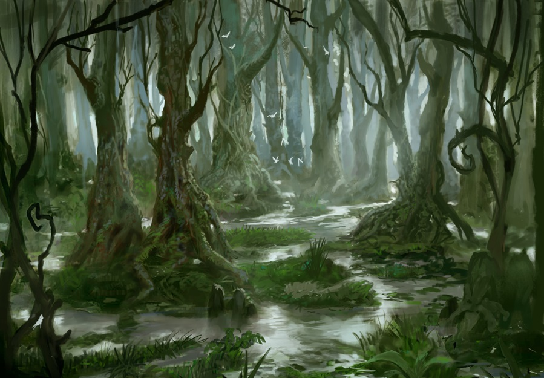

Has elegido el camino del pantano, es el camino más corto, pero no así, el más simple. A medida que tú y tus compañeros avanzan, el terreno se hace más blando y húmedo, los caballos comienzan a hundirse en el lodo y a cansarse por el esfuerzo. Cuando parece que la aventura iba a terminar en ese pantano remoto, los caballos con su ultimo esfuerzo comienzan a salir del lodo y el terreno se va haciendo cada vez más firme a medida que avanzan. Uno de los aventureros, a lo lejos, puede ver la salida y la continuidad del camino. En ese instante aceleran la marcha y pueden salir del pantano, para seguir con la travesía.
El pantano ya ha quedado atras y a medida que avanzan por el sendero, llegan al pie de la montaña es el momento de dejar los caballos y continuar a pie hasta la entrada de la cueva. A llegar, encienden unas antorchas y entran en la caverna, a los pocos metros la caverna se divide en dos y tienes que decidir en cual de las dos cuevas vas a entrar primero.